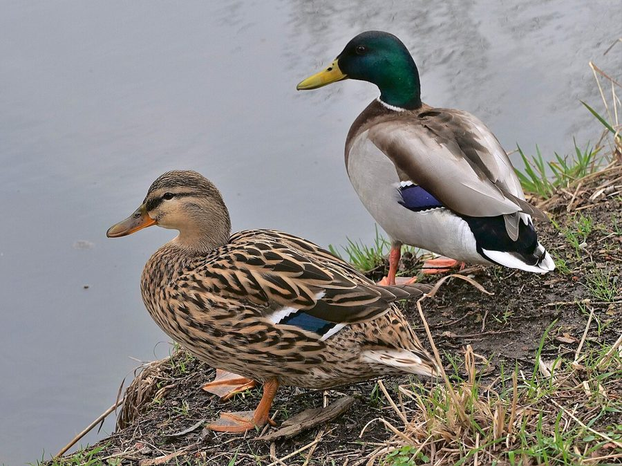

नीलसरMallard
Anas platyrhynchos · Anatidae · BRD-0116

- Scientific name वैज्ञानिक नाम
- Anas platyrhynchos Linnaeus, 1758
- Family कुल
- Anatidae
- Hindi हिंदी
- नीलसर
- Local names स्थानीय नाम
- nilsar, nil sar, neelsar, mallard, mallard duck
- Status here यहाँ की स्थिति
- native
- Movement आवागमन
- Winter visitor
- IUCN IUCN
- LC
- Review समीक्षा
- audited and independently read
When to look कब देखें
Winter visitor शीतकालीन प्रवासी. Expected mainly in October, November, December, January, February, March, April. मुख्यतः अक्टूबर, नवंबर, दिसंबर, जनवरी, फ़रवरी, मार्च, अप्रैल में अपेक्षित।
Arrives October–November from breeding grounds in northern Europe and Asia; departs by March–April. Expected along the Ghaghra and Rapti river systems and larger water bodies. All migrants and visitors →
Uses and possibilities उपयोग और संभावनाएँ
Guide: Where the winter birds are: Bakhira, Parvati Arga and the Ayodhya jheels
Drawn from the documented uses in the profile below, where each is labelled traditional, current or a research lead. All uses →
Tell it apart from इनसे अलग पहचानें
नीलसर / Mallard
Anas platyrhynchos Linnaeus, 1758 — Anatidae
नीलसर — सबसे बड़ी और सबसे आम सर्दियों की बत्तख, जो पूर्वी उत्तर प्रदेश के तालाबों, नदियों और खेतों में अक्टूबर से अप्रैल तक देखी जाती है। नर के चमकीले हरे सिर और सफेद छाती से यह तुरंत पहचानी जाती है। यह वह जंगली प्रजाति है जिससे सारे पालतू बत्तख बनाए गए हैं।
Quick Identification त्वरित पहचान
| Feature | Description |
|---|---|
| Size | Large dabbling duck; 56–65 cm long |
| Male plumage | Glossy iridescent green head; white chest and neck ring; grey body and back; black rump |
| Female plumage | Mottled brown overall; paler throat and eye area; orange-brown bill with dark markings |
| Head | Rounded; male's head bright glossy green (different from all other ducks) |
| Bill | Orange-yellow (males); orange with dark spots (females); flattened spatulate shape |
| Speculum | Iridescent blue-violet with white borders (diagnostic in flight) |
| Behaviour | Dabbles and up-ends; walks on land with ease; very common and tame near humans |
Field tip: A large duck with a glossy green head and white chest (males) is unmistakably a Mallard. This is the most familiar duck of the temperate world. Females are trickier but show the distinctive blue speculum in flight.
हिंदी — कैसे पहचानें:
नर: चमकीला हरा सिर, सफेद छाती, भूरी पीठ।
मादा: पूरे रंग की भूरी, नारंगी चोंच के साथ धब्बे।
सबसे बड़ी सर्दियों की बत्तख।
तालाबों और खेतों में बहुत आम।
Morphology आकारिकी
Biometrics:
| Measurement | Range |
|---|---|
| Total length | 560–650 mm |
| Wing (flattened chord) | 255–300 mm |
| Tail | 100–130 mm |
| Bill | 47–58 mm |
| Tarsus | 32–44 mm |
| Weight | 900–1200 g |
Size: 56–65 cm long; wingspan 81–104 cm. Weight 900–1200 g (males heavier).
Plumage (male): Head and upper neck brilliant iridescent glossy green (colour changes with light, appearing dark when backlit). Thin white neck-ring. Breast and upper back chestnut. Lower back and rump black. Tail white with two central black feathers curled upward. Wing coverts grey; speculum (inner secondary feathers) iridescent blue-violet with white borders on both sides.
Plumage (female): Overall mottled brown and buff. Head slightly darker than body; faint eye-ring and pale lore stripe. Underparts pale buff. Tail mottled brown. Speculum similar to male (blue-violet); legs orange.
Bill: Orange-yellow (males); orange-brown with dark spots and blotch (females); broad, flattened (spatulate), the genus Anas name.
Legs and feet: Orange to yellow; placed forward on body; long-toed, webbed.
Eyes: Dark; medium-sized.
Sexes: Extremely dimorphic; males dramatically more colourful.
Vocalisations. Highly vocal species:
- Drake call: A low-pitched whistled nee-ooo or kweegh, given during courtship and flight.
- Duck (female) call: A loud, repeated quacking quack-quack-quack, similar to domestic ducks.
- Tail-up call: Rapid quacking and whistling when pair bonds form.
हिंदी: नर की नरम सीटी। मादा तेज़ क़वैक करती है, जैसे पालतू बत्तख।
Behaviour & Ecology व्यवहार और पारिस्थितिकी
Highly omnivorous: Mallards are versatile foragers, feeding on:
- Aquatic vegetation (seeds, shoots, leaves)
- Aquatic invertebrates (insects, snails, small crustaceans)
- Grain and seeds from agricultural fields
- Terrestrial invertebrates and small vertebrates
- Bread and food scraps near human habitation
Feeding behaviour: Dabble at water surface; upend in shallow water; walk on land to feed in fields and gardens. Nocturnal and diurnal feeders. Highly adaptable and tame in areas where not hunted.
Social behaviour: Gregarious in winter; form flocks. Males are dominant and aggressive during courtship season. Females may separate from males in early spring.
Roosting: Nocturnal roosts on open water; diurnal rests in reed beds, flooded fields, and shelter vegetation.
Territorial: Non-territorial during winter; however, males defend immediate vicinity of mates during courtship.
Predators: Eagles, harriers, wild dogs, and jackals may take adults. Chicks vulnerable to corvids, weasels, and aquatic predators.
हिंदी: बहुत सामान्य, सक्रिय बत्तख। सब कुछ खाती है। आदमियों के पास भी दिख जाती है।
Life Cycle / Phenology जीवन चक्र
Winter visitor: Arrives October–November from breeding grounds; departs March–April. Does not breed in India (rarely, domestic birds may breed).
Breeding range: Temperate and subarctic regions across the Northern Hemisphere (North America, Europe, Asia). Breeds March–July.
Migration: Breeds in temperate wetlands and freshwater lakes; southward migration begins August–September. Arrives in Indian subcontinent October–November. Some populations are partial migrants, breeding in warmer regions but still wintering in southern latitudes.
Wintering: Widely distributed across freshwater and brackish wetlands. Often associates with human habitations.
Moult: Complete moult before autumn migration; eclipse plumage (resembling females) acquired and replaced during stay.
हिंदी: अक्टूबर में उत्तर से आता है। अप्रैल तक रहता है। सबसे आम सर्दियों की बत्तख है।
Host Plants or Prey आहार
| Food Type | Examples | Feeding Behaviour | |
|---|---|---|---|
| Aquatic vegetation | Sedges, pondweeds, algae, water lily | Dabbling at surface and upending | |
| Grain | [[wheat\ | Wheat]], rice, maize from fields | Gleaning in harvested and sown fields |
| Aquatic invertebrates | Insects, snails, small crustaceans, tadpoles | Dabbling and probing in mud | |
| Terrestrial items | Grass, seeds, insects, small mollusks | Ground feeding in fields and gardens |
हिंदी: सब कुछ खाती है — घास, अनाज, कीड़े, सब।
Predators / Natural Enemies शत्रु
- Avian predators: Marsh Harrier, Peregrine Falcon
- Mammalian predators: Jackal, wild dog, fox, wild cat, hyena
- At nest (breeding grounds): Corvids, weasels, martens, rats
- Parasites: Waterfowl helminths, protozoa, lice
हिंदी: बड़ी शिकारी चिड़ियाँ और जानवर इसका शिकार करते हैं।
Agricultural / Human Relevance कृषि प्रासंगिकता
Crop damage: Small to moderate grain damage reported from rice and wheat fields; flocks may consume or trample significant amounts of newly sown grain (Ali & Ripley 1989).
Domestication: Mallards are the wild ancestors of nearly all domestic duck breeds worldwide. The species shows remarkable domestication potential; birds that remain in human-dominated landscapes over generations become increasingly tame.
Hunting: Historically a major game duck across Europe and North America; now protected in India under the Wildlife (Protection) Act 1972.
Cultural significance: Appears in European folklore and literature as a symbol of spring and fertility. Mentioned in classical Sanskrit literature as a waterfowl of merit.
हिंदी: कभी-कभी गेहूँ और धान को नुकसान पहुँचाती है। सर्दियों में कानून से सुरक्षित है।
Expected Locally स्थानीय रूप से अपेक्षित
Not a field record. Written from published accounts for eastern Uttar Pradesh. No confirmed local sighting yet — if you have seen it, that is what the atlas needs.
अभी तक स्थानीय पुष्टि नहीं। यह विवरण प्रकाशित स्रोतों से है, किसी अवलोकन से नहीं।
Mallards are expected at the Ghaghra and Rapti river systems in eastern UP from October through April. Mishra et al. (2019) recorded this species at Bakhira Bird Sanctuary during October 2017–March 2018. Yashmita-Ulman & Singh (2025) recorded it at Parwati Arga from March 2024–February 2025, and Yashmita-Ulman & Singh (2022) recorded it in Ayodhya district wetlands. Published range and habitat information place this species in all freshwater and brackish wetlands of the region during winter months. Mallards are the most tolerant of human proximity among ducks; they are often found in village ponds and irrigation channels near human habitation.
Distribution वितरण
Global range: Breeds across the temperate Northern Hemisphere (North America, Europe, and Asia); winters across the Mediterranean, Middle East, South Asia, East Africa, and East Asia.
In India: One of the most widespread and abundant winter-visiting ducks across northern and central India.
In Uttar Pradesh: Abundant winter visitor to all districts, particularly concentrated along major river systems and large water bodies.
In Basti district / eastern UP: Common and locally abundant winter visitor to the Ghaghra and Rapti river systems, floodplain wetlands, and village ponds. Recorded at Bakhira Bird Sanctuary and Parwati Arga. Present October–April, with peak numbers December–February.
Research Questions शोध प्रश्न
- What is the population size, sex ratio, and trend of Mallards in the Ghaghra-Rapti system?
- Do Mallards show site fidelity to specific wintering wetlands, or are they nomadic within the region?
- How significant is crop damage caused by Mallard flocks in wheat and rice fields of Basti district?
- क्या मल्लार्ड की सर्दियों की संख्या में वर्षीय या दशकीय बदलाव हो रहे हैं?
- How does the presence of domestic ducks near human habitations affect wild Mallard populations? Do interbreeding events occur? (Equipment-free: observe wild and domestic flocks together and note any mixed-species interactions.)
- क्या अलग-अलग तालाबों में आने वाले मल्लार्ड की संख्या में बदलाव है?
Similar Species मिलती-जुलती प्रजातियाँ
| Species | How to tell apart | हिंदी |
|---|---|---|
| Spot-billed Duck (Anas poecilorhyncha) | Smaller; male lacks glossy green head; year-round resident | छोटी, हरा सिर नहीं, साल-भर |
| Northern Pintail (Anas acuta) | Much more slender; very long neck; different head pattern | पतली गर्दन, बहुत स्लिम |
| Common Teal (Anas crecca) | Much smaller; male has chestnut head with green eye-stripe | बहुत छोटी, लाल सिर, हरी पट्टी |
Field rule: A large duck with a glossy green head and white chest (males) — is a Mallard. This is by far the most familiar duck species globally. Females shown blue speculum in flight and paired with green-headed males in winter.
Taxonomy & Classification वर्गीकरण
Original description. Anas platyrhynchos was described by Carl Linnaeus in 1758 in Systema Naturae, 10th Edition, volume 1, page 125, as Anas platyrhynchos. Type locality: Europe (Sweden).
Subspecies. Multiple subspecies recognised, with some taxonomic controversy:
- A. p. platyrhynchos Linnaeus, 1758 — Europe to western Asia; winters to North Africa and South Asia
- A. p. domesticus (domestic populations) — derived from A. p. platyrhynchos
- Asian populations formerly considered A. p. conboschas are now treated as part of A. p. platyrhynchos
The wild populations wintering in India are referable to A. p. platyrhynchos.
Family and order placement. Order Anseriformes; family Anatidae; genus Anas contains the "true" dabbling ducks, the most diverse waterfowl group.
Phylogenetic notes. Anas platyrhynchos is a complex of populations with multiple evolutionary lineages within a single species. Domestic ducks have been selected for so many traits that they are sometimes considered a distinct species (A. domesticus), though this is not standard.
IUCN status rationale. Assessed as Least Concern (LC). Global population is enormous (>5 million), stable, and increasing. The species has expanded its range northward and southward in response to climate change. Populations have benefited from wetland protection and hunting regulations in many regions.
Photo Gallery फोटो गैलरी
No photos yet — add field photos to media/species/mallard/ and run node scripts/sync_photos.js.
Photos needed आवश्यक फोटो
- [ ] Male in breeding plumage with glossy green head (नर चमकीला हरा सिर)
- [ ] Female for identification (मादा की तस्वीर)
- [ ] Pair together on water (जोड़ा पानी पर)
- [ ] In flight showing blue speculum (उड़ान में नीली पंख पट्टी)
- [ ] In agricultural field (खेत में)
Atlas Connections संबंधित प्रजातियाँ
- Northern Pintail — dabbling duck; shares habitat
- Common Teal — smallest dabbling duck; coexists in same wetlands
- Indian Spot-billed Duck — smaller duck; year-round resident
- Common Coot — coexists at larger water bodies
References संदर्भ
- Linnaeus, C. (1758). Systema Naturae per Regna Tria Naturae (10th edn). Laurentii Salvii, Holmiae. Vol. 1, p. 125. [original description]
- Ali, S. & Ripley, S.D. (1987). Handbook of the Birds of India and Pakistan. Vol. 1. Oxford University Press, New Delhi.
- Grimmett, R., Inskipp, C. & Inskipp, T. (2011). Birds of the Indian Subcontinent. 2nd ed. Christopher Helm, London.
- Mishra, H., Kumar, V. & Kumar, A. (2019). Population structure and habitat utilization of migratory birds at Bakhira Bird Sanctuary, Uttar Pradesh, India. Pakistan Journal of Zoology, 52(1), 247–254.
- Yashmita-Ulman & Singh, M. (2025). A preliminary assessment of avifaunal diversity in Parwati Arga Bird Sanctuary, Uttar Pradesh, India. Journal of Threatened Taxa, 17(11), 27976–27984.
- Yashmita-Ulman & Singh, M. (2022). Avifaunal diversity in unprotected wetlands of Ayodhya District, Uttar Pradesh, India. Journal of Threatened Taxa, 14(8), 21561–21578.
- BirdLife International (2023). Anas platyrhynchos. IUCN Red List of Threatened Species.
- GBIF Occurrence Data — Anas platyrhynchos, Uttar Pradesh (2024).
Source file: species/fauna/birds/mallard.md